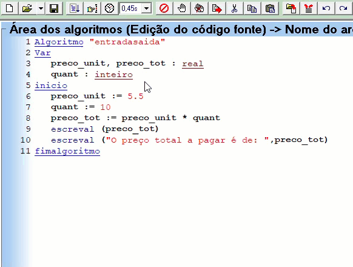
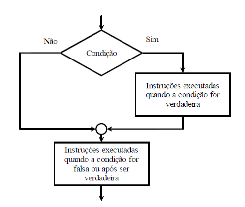
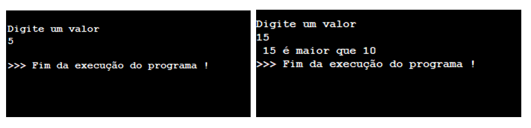
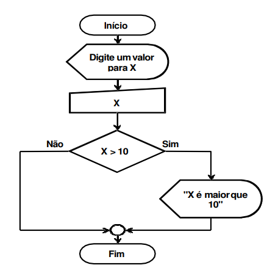
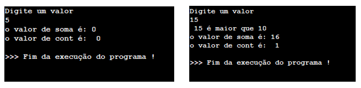
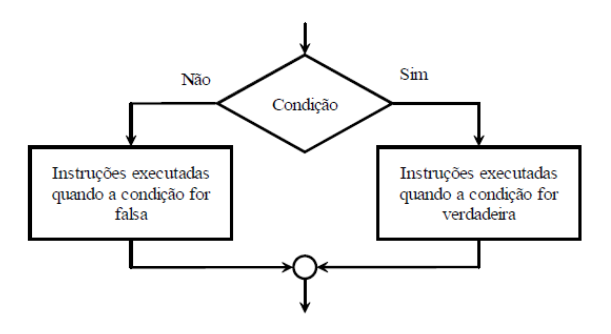
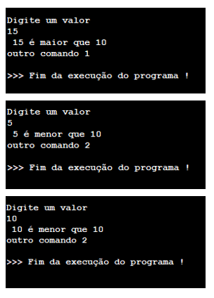
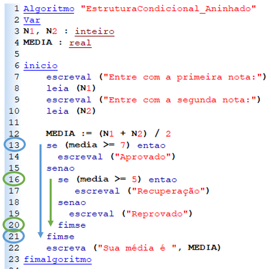
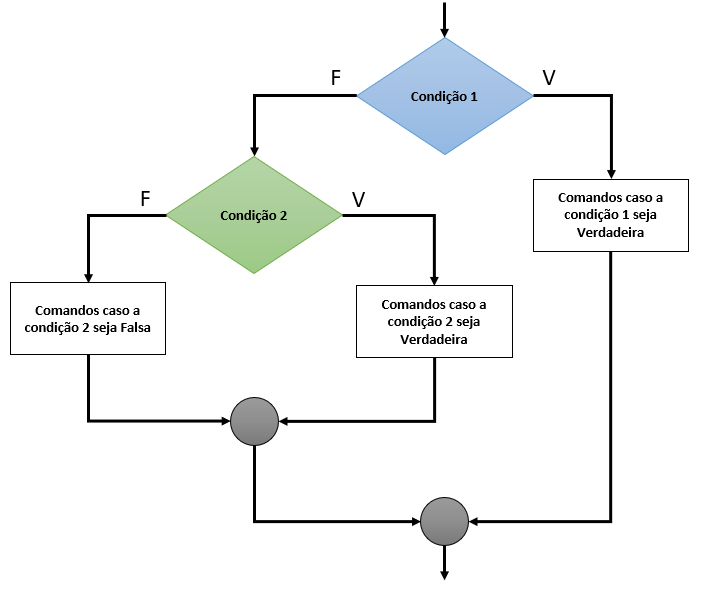

Estrutura de controle de fluxo de execução condicional, SE ... Senão, estrutura de decisão, utilizada para alterar o fluxo/resultado de um algoritmo.
1 - Estruturas De Controle Do Fluxo De Execução
Até o momento, os algoritmos estudados utilizam apenas instruções primitivas de atribuição e de entrada e saída de dados. Qualquer conjunto de dados fornecido a um algoritmo destes será submetido ao mesmo conjunto de instruções, executadas sempre na mesma sequência.
No entanto, na prática, muitas vezes é necessário executar ações diversas em função dos dados fornecidos ao algoritmo. Em outras palavras, dependendo do conjunto de dados de entrada do algoritmo, deve-se executar um conjunto diferente de instruções.
Além disso, pode ser necessário executar um mesmo conjunto de instruções um número repetido de vezes. Em resumo, é necessário controlar o fluxo de execução das instruções, (a sequência em que as instruções são executadas num algoritmo), em função dos dados fornecidos como entrada do mesmo.
De acordo com o modo como o controle do fluxo de instruções de um algoritmo é feito, as estruturas básicas de controle são classificadas em:
• Estruturas sequenciais
• Estruturas de decisão
• Estruturas de repetição
Comandos Compostos:
Um comando composto é um conjunto de zero ou mais comandos, (ou instruções), simples, como atribuições e instruções primitivas de entrada ou saída de dados, ou alguma das construções apresentadas neste capítulo.
Este conceito é bastante simples, e será útil e conveniente nos itens seguintes, na definição das estruturas básicas de controle de execução.
Estrutura Sequencial:
Na estrutura sequencial os comandos de um algoritmo são executados numa sequência pré-estabelecida. Cada comando é executado somente após o término do comando anterior.
Uma estrutura sequencial é delimitada pelas palavras reservadas, (Início e Fim), e contém basicamente comandos de atribuição, comandos de entrada e comandos de saída. Os algoritmos do capítulo anterior são algoritmos que utilizam uma única estrutura sequencial.
Um algoritmo puramente sequencial é aquele cuja execução é efetuada em ordem ascendente dos números que identificam cada passo. A passagem de um passo ao seguinte, é natural e automática, e cada passo é executado uma única vez.
É o que vínhamos fazendo até este momento, observe a sequência de execução de um algoritmo sequencial:

A execução do código ocorre de cima para baixo sem interrupções e repetições.
Estruturas de Decisão
Neste tipo de estrutura o fluxo de instruções a ser seguido é escolhido em função do resultado da avaliação de uma ou mais condições. Uma condição é uma expressão lógica.
A classificação das estruturas de decisão é feita, de acordo com o número de condições que devem ser testadas para que se decida qual o caminho a ser seguido. Segundo esta classificação, têm-se, 3 tipos de estruturas de decisão:
• Estrutura de Decisão Simples (Se ... então)
• Estrutura de Decisão Composta (Se ... então ... senão)
• Estrutura de Decisão Múltipla do Tipo Escolha (Escolha ... Caso ... outrocaso)
Nestes algoritmos, as situações são resolvidas através de passos cuja execução é subordinada a uma condição. Assim, o algoritmo conterá passos que são executados somente se determinadas condições forem observadas.
Escute essa aula: Estruturas de Controle de Fluxo de Execução
Não se preocupe com os código apresentados no seguinte vídeo, as estruturas SE... Então ... Senão serão abordadas nas aulas seguintes, atente-se aos conceitos.
2 - Estruturas de Decisão Simples ( Se ... então )

Nesta estrutura, uma única condição, (expressão lógica), é avaliada. Dependendo do resultado desta avaliação, um comando ou conjunto de comandos serão executados, (se a avaliação for verdadeira), ou não serão executados, (se a avaliação for falsa). Observe no diagrama de blocos na figura, a estrutura para instrução se...então .
Há duas sintaxes possíveis para a estrutura de decisão simples:
SE condição ENTÃO
comando_único
Fimse
Exemplo:
Se X>10 entao
Escreval (x, " é maior que 10")
Fimse
SE condição ENTÃO
comando_composto
FIMSE
Exemplo:
Se X>10 entao
cont:= cont+1
soma := cont+ x
Escreva (x, " é maior que 10")
Fimse
A semântica desta construção é a seguinte: a condição é avaliada:
Se o resultado for verdadeiro, então o comando_único ou o conjunto de comandos, (comando_composto), delimitados pelas palavras reservadas, (início e fimse), serão executados. Ao término de sua execução, o fluxo do algoritmo prossegue pela instrução seguinte à construção, ou seja, o primeiro comando após a palavra-reservada Fimse.
Observe e execute no VisuAlg estes dois exemplos de algoritmos para a estrutura de decisão SE:
Exemplo 1:
algoritmo "estrutura_de_decisão_simples"
var
X : inteiro
inicio
Escreva ("Digite um valor" )
Leia (X)
Se X>10 entao
Escreva (x, " é maior que 10")
Fimse
Fimalgoritmo

Observe que o comando Escreva (x, " é maior que 10"), só será executado, somente, se o valor digitado pelo usuário for um valor maior do que 10, como explicitado pela condição SE, como no seguinte fluxograma:

Escute essa aula: Estruturas de Decisão Simples ( Se ... então ) 1
Exemplo 2:
algoritmo "estrutura_de_decisão_simples"
var
X,cont,soma : inteiro
inicio
Escreval ("Digite um valor" )
Leia (X)
Se X>10 entao
cont:= cont+1
soma := cont+ x
Escreval (x, " é maior que 10")
Fimse
escreval ("o valor de soma é:", soma)
escreval ("o valor de cont é: ",cont)
Fimalgoritmo

Observe que como os valores de soma e cont são atribuídos dentro do comando SE, (entre o Se e o Fimse), os valores de cont e soma só passarão a ter um valor diferente de zero caso o usuário digite um valor maior que 10 para a variável x.
Observe no seguinte Gif, que quando o usuário digita um valor menor do que 10, após a avaliação 5>10 retornar falso, o VisuAlg pula para o primeiro comando após o fimse.
Escute essa aula: Estruturas de Decisão Simples ( Se ... então ) 2
No seguinte video é apresentado o comando Se ... então ... fimse, utilizando os operadores relacionais.
3 - Estruturas de Decisão Composta ( Se ... então ... senão )

Nesta estrutura, uma única condição, (expressão lógica), é avaliada. Se o resultado desta avaliação for verdadeiro, um comando ou conjunto de comandos serão executados. Caso contrário, ou seja, quando o resultado da avaliação for falso, um outro comando ou um outro conjunto de comandos serão executados.
Observe no diagrama de blocos a estrutura para instrução se...então...senão, representado pela figura.
A sintaxe do VisuAlg para a estrutura de decisão composta é:
SE condição ENTAO
Comando_unico_ou_composto1
SENAO
Comando_unico_ou_composto2
Fimse
Exemplo:
Se X>10 entao
Escreval (x, " é maior que 10")
senao
Escreval (x, " é menor que 10")
Fimse
A semântica desta construção é a seguinte: a condição é avaliada: Se o resultado for verdadeiro, então, o Comando_unico_ou_composto1 serão executados. Ao término de sua execução, o fluxo do algoritmo prossegue pela instrução seguinte à construção, ou seja, o primeiro comando após o Comando_unico_ou_composto2 ou a palavra-reservada Fimse.
Nos casos em que a condição é avaliada como falsa, o Comando_unico_ou_composto2 serão executados. Ao término de sua execução o fluxo do algoritmo prossegue pela instrução seguinte à construção, ou seja, o primeiro comando após Comando_unico_ou_composto2 ou a palavra-reservada Fimse.
Observe, e execute no VisuAlg o exemplo de algoritmo que lê um número e escreve, se o mesmo é ou não maior que 10:
algoritmo "estrutura_de_decisão_composta"
var
X : inteiro
inicio
Escreval ("Digite um valor" )
Leia (X)
Se X>10 entao
Escreval (x, " é maior que 10")
Escreval ("outro comando 1")
senao
Escreval (x, " é menor que 10")
Escreval ("outro comando 2")
Fimse
fimalgoritmo

Observe, que ao atribuir 10 para a variável X, o algoritmo executará o senão, pois como 10 não é maior do que 10, ele cai na segunda opção que seria o senão.
Observe também, que para este caso, temos duas saídas possíveis, determinadas pelo valor lógico de verdadeiro ou falso para a condição X>10. Portanto o Se ... Então ... Senão é utilizado para saídas binárias, ou seja, quando existem apenas duas saídas possíveis para aquela condição.
Escute essa aula: Estruturas de Decisão Composta ( Se ... então ... senão )
Para acrescentar mais uma condição como por exemplo X=10, devemos acrescentar outro comando SE, como no seguinte exemplo:
Escreval ("Digite um valor" )
Leia (X)
Se X=10 entao
Escreval ("O valor digitado é igual a 10")
Fimse
Se X>10 entao
Escreval (x, " é maior que 10")
Fimse
Se X<10 entao
Escreval (x, " é menor que 10")
Fimse
Fimalgoritmo
Observe que neste caso cobrimos todas as saídas possíveis do algoritmo, X ser maior, menor ou igual ao número digitado pelo usuário.
Nos algoritmos, a correta formulação de condições, isto é, expressões lógicas, é de fundamental importância, visto que as estruturas de seleção são baseadas nelas. As diversas formulações das condições podem levar a algoritmos distintos.
Os algoritmos podem ser baseados em estruturas concatenadas uma em sequência a outra ou em estruturas aninhadas uma dentro da outra, de acordo com a formulação da condição.
A forma como foi escrito este último exemplo é o de estrutura concatenada, temos um se para cada condição. As estruturas concatenadas tem a vantagem de tornar o algoritmo mais legível, facilitando a correção do mesmo em caso de erros.
Escute essa aula: Estruturas de Decisão Composta ( Se ... então ... senão ) Concatenado
Agora observe e execute no VisuAlg um algoritmo com estrutura aninhada:
Algoritmo "EstruturaCondicional_Aninhado"
Var
N1, N2 : inteiro
MEDIA : real
inicio
escreval ("Entre com a primeira nota:")
leia (N1)
escreval ("Entre com a segunda nota:")
leia (N2)
MEDIA := (N1 + N2) / 2
se (media >= 7) entao
escreval ("Aprovado")
senao
se (media >= 5) entao
escreval ("Recuperação")
senao
escreval ("Reprovado")
fimse
fimse
escreva ("Sua média é ", MEDIA)
fimalgoritmo

Observe que neste algoritmo temos um SE dentro de um SENAO, a este tipo de estrutura chamamos de estrutura aninhada, pois temos um SE dentro do outro.
Note que o primeiro SE inicia na linha 13 e finaliza no fimse da linha 21, o segundo SE está aninhado com o senão do primeiro SE, (só será executado dentro de senão), ele se inicia na linha 16 e finaliza na linha 20.
As estruturas aninhadas ou encadeadas têm a vantagem de tornar o algoritmo mais rápido, pois são efetuados menos testes e menos comparações, o que resulta num menor número de passos para chegar ao final do mesmo.
Normalmente se usa estruturas concatenadas nos algoritmos, devido à facilidade de entendimento das mesmas, e estruturas aninhadas ou encadeadas, somente nos casos em que seu uso é fundamental.
Lembrando que existem várias formas algorítmicas de se resolver um problema, não existe uma resposta única correta.
Observe um fluxograma de uma estrurura aninhada ou encadeada:

Observe no seguinte GIF, a mudança do fluxo de execução do algoritmo dependendo do valor da variavel média, experimente com outros valores de média, caso deseje, aumente o tempo de execução de cada linha ao lado do botão de relógio para observar melhor.
Observe no GIF, a mudança do fluxo de execução do algoritmo dependendo do valor da variavel média, experimente com outros valores de média, caso deseje, aumente o tempo de execução de cada linha ao lado do botão de relógio para observar melhor.
Escute essa aula: Estruturas de Decisão Composta ( Se ... então ... senão ) Aninhado
Além do próximo vídeo, volte e assista ao primeiro vídeo deste módulo.